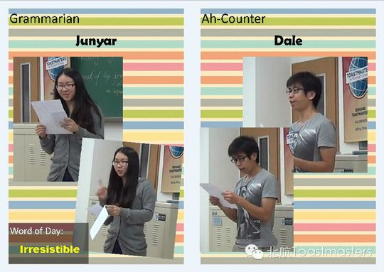
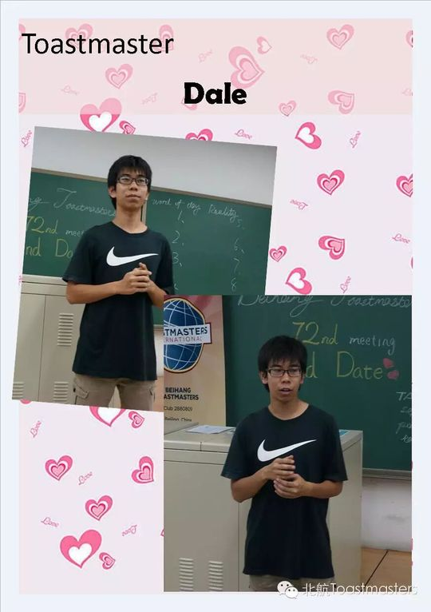
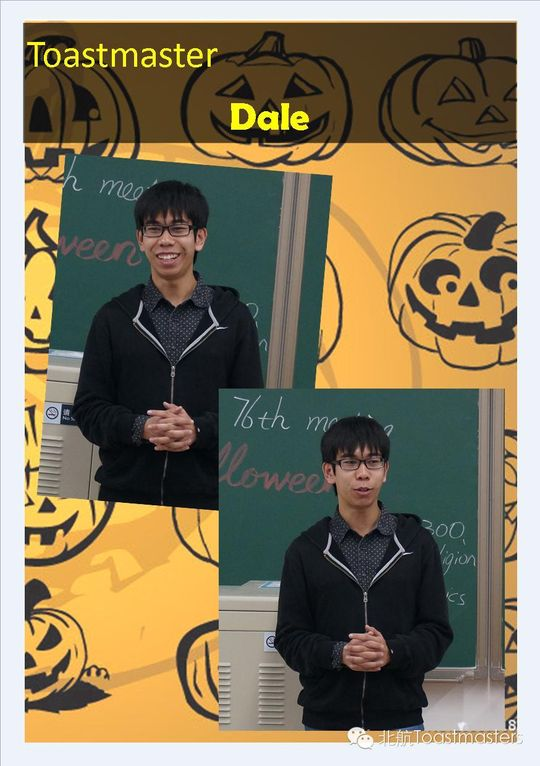
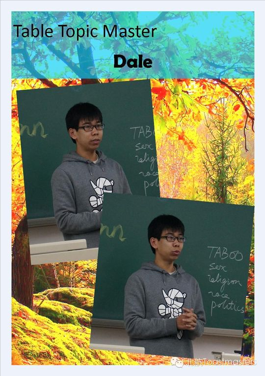
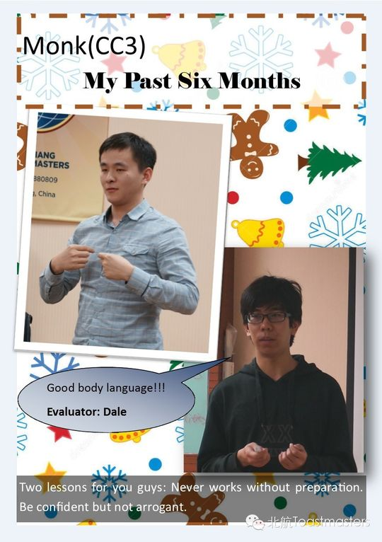
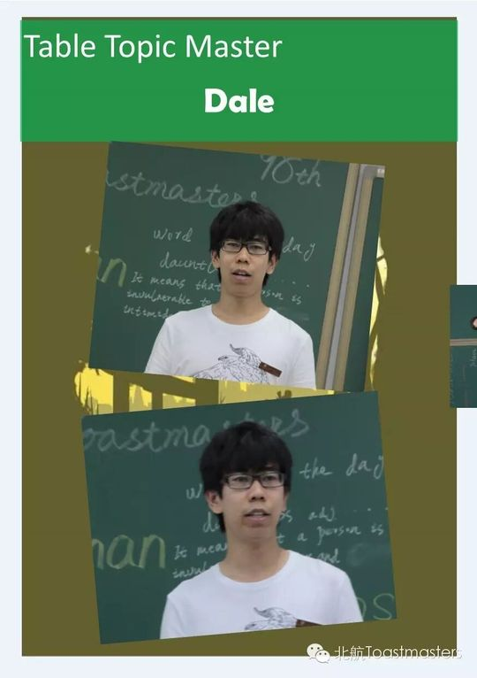
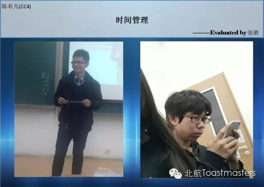
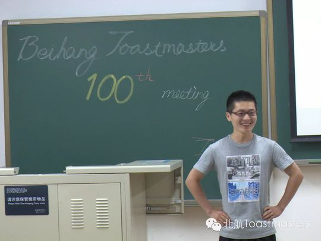

Dale
Dale是北航Toastmasters早期的核心成员之一，俱乐部里大家给他起的外号是"翘臀"。2014年初他已活跃在会议中，最初以Ah-Counter等基础功能角色起步。同年4月，在第55届"Persistence"会议上，他用CC1《Regretless Life》完成破冰。纪要里把他形容为"聪明、坚韧、勤奋的男孩"，最让人佩服的是他的时间管理能力——每天清晨五点起床，这种自律在伙伴中几乎无人能及。
破冰之后，他的演讲之路稳步推进：5月第61届带着CC2《Meditations》，从古罗马皇帝马可·奥勒留的《沉思录》谈起，讲"功业易逝、思想长存"；7月第66届以CC3《For Me, What LOVE Means》分享一个"极客眼中的爱"；2015年1月第85届又带来CC4《what is positive psychology》，把积极心理学和"如何获得快乐"带上讲台。一路CC1到CC4，主题从坚持、沉思到爱与积极，透出他既理性又温暖的一面。
除了备稿演讲，Dale更是俱乐部里最勤的"台前担当"。他多次出任会议主持Toastmaster（如第67、71、72、76届），也常做即兴主持Table Topic Master（第63、78届）和即兴点评官（第57届），主题信手拈来——从Halloween、Blind Date到Autumn、Sports，总能抛出有趣又有深度的问题。作为俱乐部的SAA（事务官），他被公认为"最出色地完成SAA使命"的典范。
2015年6月，在第100届里程碑纪念会议上，Dale与神僧Monk一同接受了俱乐部为老member举办的毕业仪式。纪要里写他是"最出色完成SAA使命，并且成功在俱乐部找到真爱的典范"。"头马人永不毕业"——他和这段旅程，都留在了北航头马的故事里。
完整足迹 · 15 次出现（点开，每条可跳转原文）
- 2014-04-08成长统计:共担任2次角色Ah-C(2)
- 2014-04-10第55次 · 做CC1备稿演讲《Regretless Life》
- 2014-04-25第57次 · 担任即兴演讲点评官
- 2014-05-30做CC2备稿演讲《Meditations》
- 2014-06-13第63次 · 担任即兴演讲主持,准备问题
- 2014-07-04做CC3备稿演讲《For Me, What LOVE Means》
- 2014-08-21第67次 · 担任第67次会议主持人
- 2014-09-25第71次 · 担任会议主持人(Toastmaster)
- 2014-09-26第72次 · 担任第72次会议主持人(Toastmaster)
- 2014-10-31第76次 · 担任76次万圣节会议主持
- 2014-11-13第78次 · 带领分享秋天故事
- 2014-11-17第78次 · 主持Autumn桌话
- 2015-01-16第85次 · 备稿演讲 What is positive psychology
- 2015-06-05第98次 · 担任即兴演讲主持
- 2015-06-17第100次 · 100th Meeting Minutes of BeihangTMC
闯关之路 · Competent Communication
做过的演讲 · 4 场
担任过的职务 · 俱乐部官员
担任过的会议角色
里程碑
- 2014-04 早期功能角色 ↗在Member Growth统计中以Ah-Counter(2次)起步，活跃于俱乐部。
- 2014-04-11 首秀破冰 CC1《Regretless Life》 ↗第55届会议完成破冰演讲，被形容为聪明、坚韧、勤奋、清晨五点起床的人。
- 2014-2015 担任SAA事务官成为俱乐部官员，被公认为最出色完成SAA使命的典范。
- 2015-01-16 CC4《what is positive psychology》 ↗第85届，最后一篇有记录的备稿演讲，主题为积极心理学与快乐。
- 2015-06-17 第100届毕业告别 ↗在里程碑纪念会议上与Monk一同接受毕业仪式，被誉为在俱乐部找到真爱的典范。
为俱乐部做的事
- 担任SAA（事务官），被公认为俱乐部历史上最出色完成SAA使命的典范
- 多次出任会议主持Toastmaster，承担台前组织与串场工作
- 频繁担任即兴主持Table Topic Master，设计有趣且有深度的即兴话题
- 担任即兴点评官，帮助提升即兴环节质量
- 从CC1到CC4稳步完成多篇备稿演讲，为俱乐部贡献优质内容
- 以清晨五点起床的自律精神，为成员树立时间管理榜样
头马里的人
照片墙 · 时间线

✓
✓
✓
✓ ✓
✓ ✓
✓ ✓
✓
✓ ✓
✓ ✓
✓
✓
✓


